Lesespur: Die Schuldenfalle: Ratenkauf, Handyvertrag und Zahlpause – Lesespurgeschichte mit Rätseln (Klasse 9)

Lesespur: Der Mietvertrag: die erste eigene Wohnung – Lesespurgeschichte mit Rätseln (Klasse 9)

Lesespur: Markt und Preis: Angebot und Nachfrage am Christbaummarkt – Lesespurgeschichte mit Rätseln (Klasse 9)
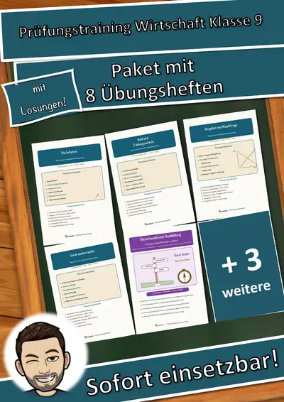
Materialpaket Prüfungstraining Wirtschaft Klasse 9: 8 Übungshefte mit Prüfungsteil und Lösungen

Die soziale Marktwirtschaft – Prüfungstraining Wirtschaft (Klasse 9)
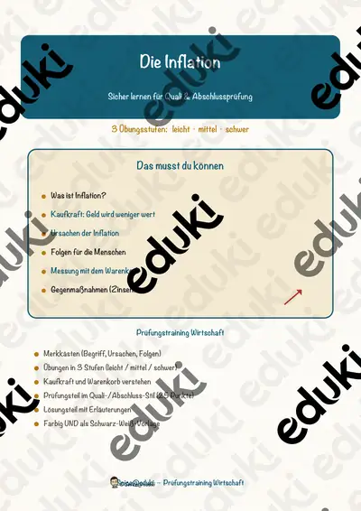
Die Inflation – Prüfungstraining Wirtschaft (Klasse 9)

Der Kaufvertrag – Prüfungstraining Wirtschaft (Klasse 9)

Prüfungstraining Sozialkunde: Die Sozialversicherung (Klasse 9)

Verbraucherrechte – Prüfungstraining Wirtschaft (Klasse 9)

Berufswahl und Ausbildung – Prüfungstraining Wirtschaft (Klasse 9)

Der Wirtschaftskreislauf – Prüfungstraining Wirtschaft (Klasse 9)

Geld und Zahlungsverkehr – Prüfungstraining Wirtschaft (Klasse 9)

Angebot und Nachfrage – Prüfungstraining Wirtschaft (Klasse 9)
Materialpaket WR Klasse 8/9 Realschule Bayern – Markt und Marketing: 3 Arbeitshefte mit Lösungen

Materialpaket WR Klasse 8/9 Realschule Bayern – Recht und Arbeit: 4 Arbeitshefte mit Lösungen

Materialpaket WR Klasse 8/9 Realschule Bayern – Bank und Börse: 4 Arbeitshefte mit Lösungen

Materialpaket BwR Klasse 9 Realschule Bayern: 10 Arbeitshefte mit Lösungen
Zinsen im Kredit – Arbeitsheft mit Lösungen (BwR 9, Realschule Bayern)

Folgen der Abschreibung – Arbeitsheft mit Lösungen (BwR 9, Realschule Bayern)
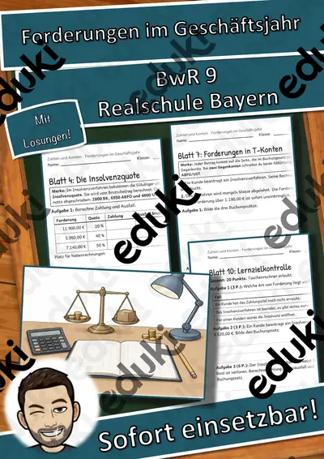
Forderungen im Geschäftsjahr – Arbeitsheft mit Lösungen (BwR 9, Realschule Bayern)

Investitionsrechnung – Arbeitsheft mit Lösungen (BwR 9, Realschule Bayern)
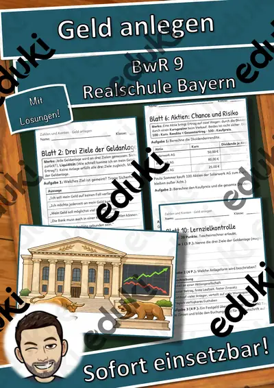
Geld anlegen – Arbeitsheft mit Lösungen (BwR 9, Realschule Bayern)
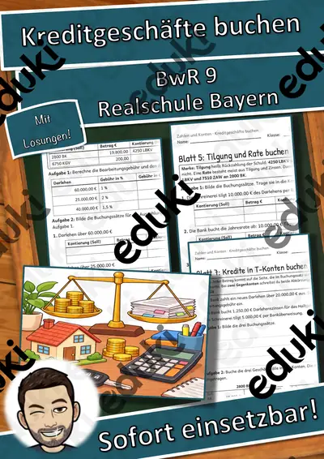
Kreditgeschäfte buchen – Arbeitsheft mit Lösungen (BwR 9, Realschule Bayern)

Personalführung – Arbeitsheft mit Lösungen (BwR 9, Realschule Bayern)

Unternehmerlohn kalkulieren – Arbeitsheft mit Lösungen (BwR 9, Realschule Bayern)
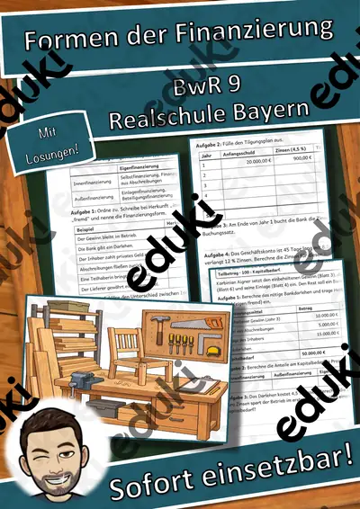
Formen der Finanzierung – Arbeitsheft mit Lösungen (BwR 9, Realschule Bayern)

Arbeitsschutz – Arbeitsheft mit Lösungen (WR 9, Realschule Bayern)

Vorsorge fürs Alter – Arbeitsheft mit Lösungen (WR 9, Realschule Bayern)
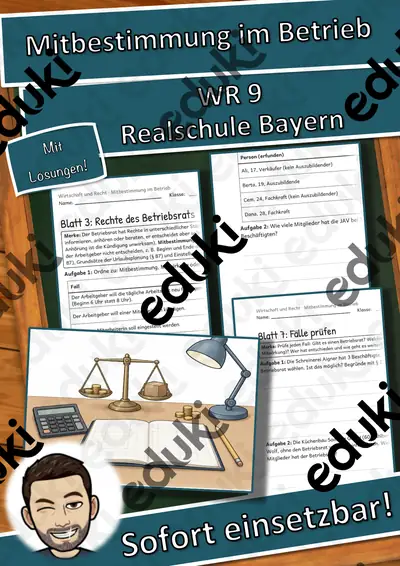
Mitbestimmung im Betrieb – Arbeitsheft mit Lösungen (WR 9, Realschule Bayern)

Gebote und Verbote: Rechte und Pflichten im Alltag – Arbeitsheft mit Lösungen (WR 8/9, Realschule)

Alternative Finanzierung – Arbeitsheft mit Lösungen (BwR 9, Realschule Bayern)

Kreditkosten vergleichen – Arbeitsheft mit Lösungen (BwR 9, Realschule Bayern)
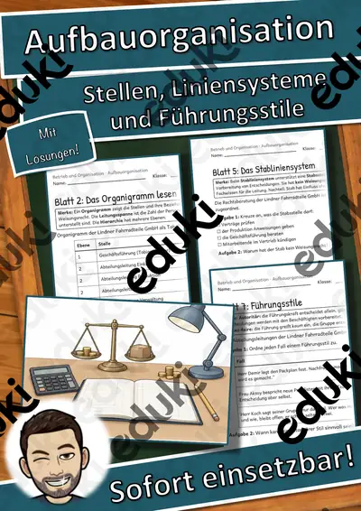
Aufbauorganisation – Arbeitsheft mit Lösungen (BwR 9, Realschule Bayern)
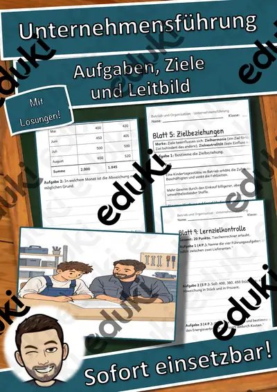
Unternehmensführung: Aufgaben, Ziele und Leitbild – Arbeitsheft mit Lösungen (BwR 9, Realschule)
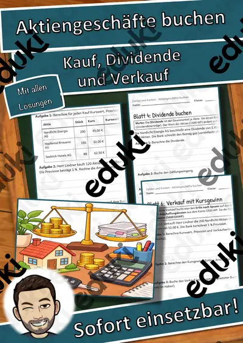
Aktiengeschäfte buchen: Kauf, Dividende und Verkauf – Arbeitsheft mit Lösungen (BwR 9, Realschule)
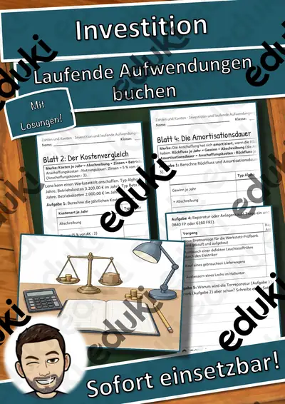
Investition: laufende Aufwendungen buchen – Arbeitsheft mit Lösungen (BwR 9, Realschule Bayern)

Das Privatkonto: Entnahmen, Einlagen und Eigenkapital – Arbeitsheft mit Lösungen (BwR 9, Realschule)

Darlehen und Kontokorrentkredit – Arbeitsheft mit Lösungen (BwR 9, Realschule Bayern)

Finanzierung – Arbeitsheft mit Lösungen (BwR 9, Realschule Bayern)
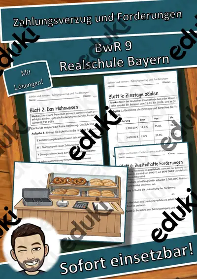
Zahlungsverzug und Forderungen – Arbeitsheft mit Lösungen (BwR 9, Realschule Bayern)
Anlagen buchen: Kauf und Abschreibung – Arbeitsheft mit Lösungen (BwR 9, Realschule Bayern)

Bank und Geldanlage: das Bankensystem – Arbeitsheft mit Lösungen (WR 8/9, Realschule Bayern)

Bewerbung: der Berufsausbildungsvertrag – Arbeitsheft mit Lösungen (WR 8/9, Realschule Bayern)

Markt und Preis: Preisbildung und Marktformen – Arbeitsheft mit Lösungen (WR 8/9, Realschule Bayern)

Geschäftsfähigkeit: der Taschengeldparagraph – Arbeitsheft mit Lösungen (WR 8/9, Realschule Bayern)

Der Kaufvertrag: Abschluss und Erfüllung – Arbeitsheft mit Lösungen (WR 8/9, Realschule Bayern)
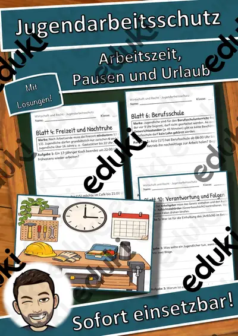
Jugendarbeitsschutz: Arbeitszeit, Pausen und Urlaub – Arbeitsheft mit Lösungen (WR 8/9, Realschule)
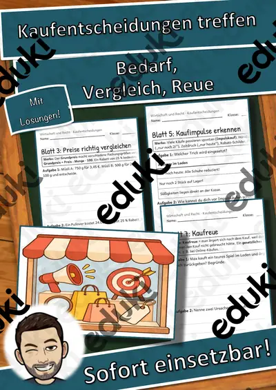
Kaufentscheidungen treffen: Bedarf, Vergleich, Reue – Arbeitsheft mit Lösungen (WR 8/9, Realschule)
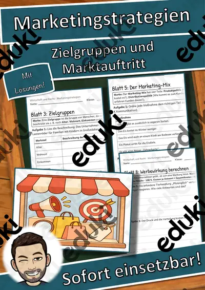
Marketingstrategien: Zielgruppen und Marktauftritt – Arbeitsheft mit Lösungen (WR 8/9, Realschule)
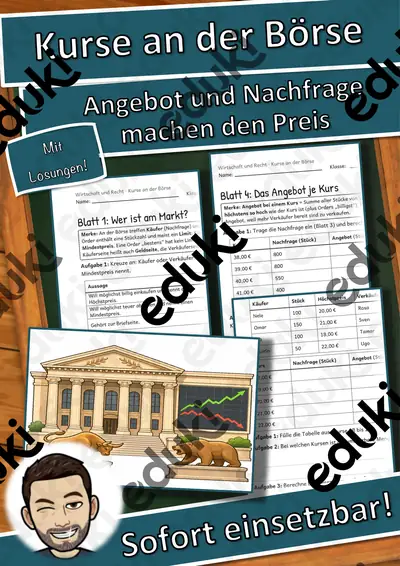
Kurse an der Börse – Arbeitsheft mit Lösungen (WR 8/9, Realschule Bayern)
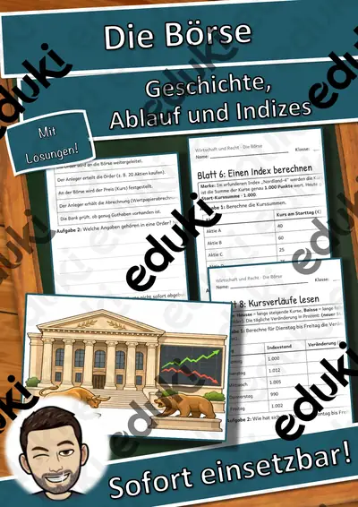
Die Börse: Geschichte, Ablauf und Indizes – Arbeitsheft mit Lösungen (WR 8/9, Realschule Bayern)

Bankgeschäfte: Kredite und Wertpapiere für Kunden – Arbeitsheft mit Lösungen (WR 8/9, Realschule)
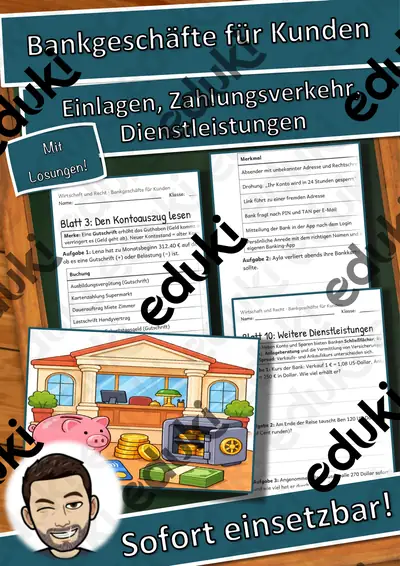
Bankgeschäfte für Kunden – Arbeitsheft mit Lösungen (WR 8/9, Realschule Bayern)

Ausbildungsvertrag Basics – Bewerbung & Praktikum, 3 Stufen, mit Hilfen & Lösungen (Klasse 7–10)
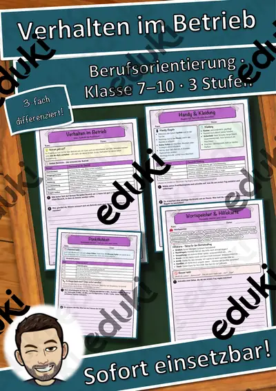
Verhalten im Betrieb – Bewerbung & Praktikum, 3 Stufen, mit Hilfen & Lösungen (Klasse 7–10)
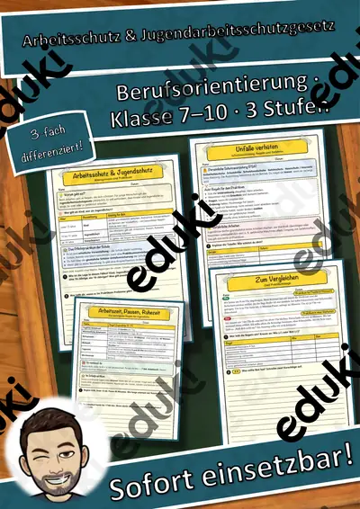
Arbeitsschutz & Jugendarbeitsschutzgesetz – Bewerbung & Praktikum, 3 Stufen, mit Hilfen & Lösungen (Klasse 7–10)

Vizekanzler und Bundesminister der Finanzen - Lars Klingbeil

Steckbrief Ausbildungsberuf Fachkraft Lagerlogistik

Steckbrief Ausbildungsberuf Zahnmedizinische/r Fachangestellte/r
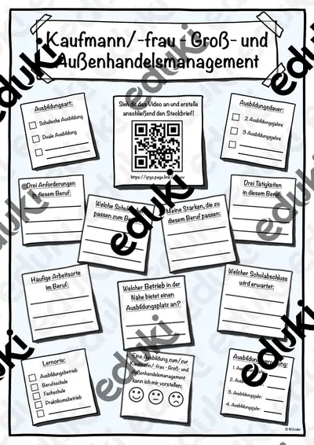
Steckbrief Ausbildungsberuf Kaufmann/frau - Groß- und Außenhandelsmanagement
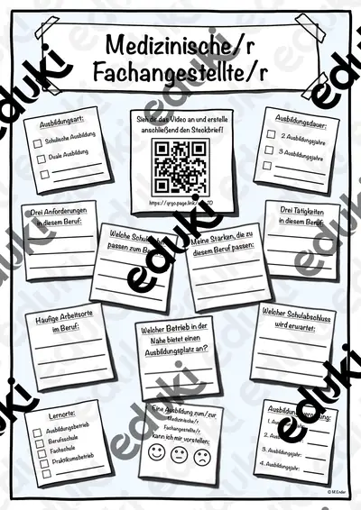
Steckbrief Ausbildungsberuf Medizinische/r Fachangestellte/r

Steckbrief Ausbildungsberuf Elektroniker/in
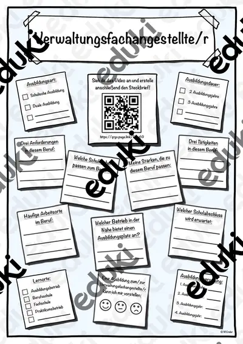
Steckbrief Ausbildungsberuf Verwaltungsfachangestellte/r
Keine Materialien gefunden – versuch einen anderen Suchbegriff oder Filter.